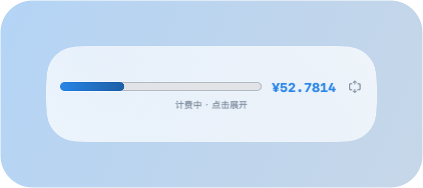

逍狗屁屁DEVELOPER
03
设置与迷你形态
Settings & Mini Mode

1
六个折叠分组
薪酬与工作天数 / 工作时间·自动下班 / 工时校正 / 外观与图标 / 窗口行为 / 流水明细，点标题展开收起，右上角一键全展开或全折叠，窗口高度跟着走。
2
薪酬与工作日
填每月税后工资；工作日默认为法定节假日推算值（本月自动 21 天），可手改、也可一键恢复自动。
3
工作时间 · 自动下班
上下班时间 + 休息分钟，右侧实时显示「= 8.0 小时/天」；「自动下班」开关控制到点是否自动停表，开启后过点再计即为加班。
4
校正工时
输入今天实际总工时（如 5.5）点「✓ 校正」，记多了核减、记少了补记，右侧实时显示当前已计小时。

5
迷你胶囊
首页点 ➖ 收起为 330×90 小胶囊：图标 + 进度条 + 实时金额，点击任意处展开。计费从不中断。
6
流水明细
按日期范围查询每天的进账与加班，单条删除或手动补记；今日以实时打卡为准。